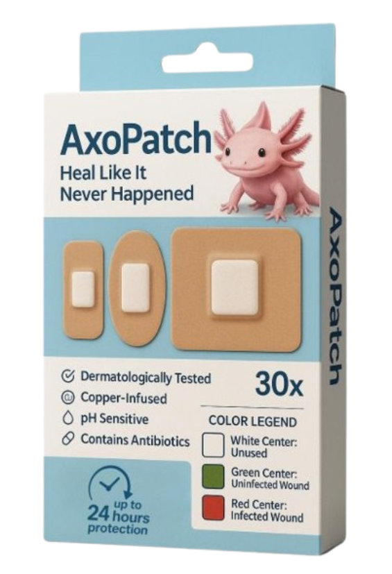
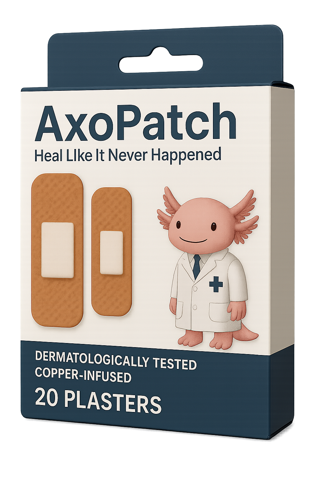
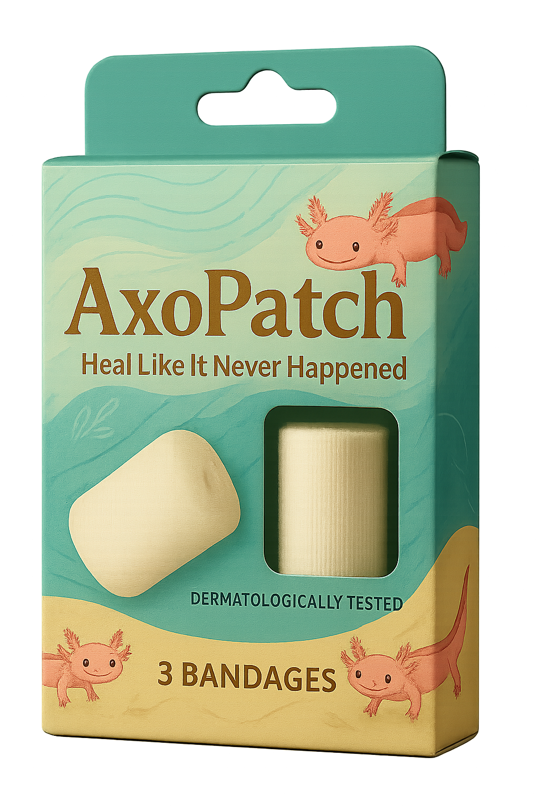
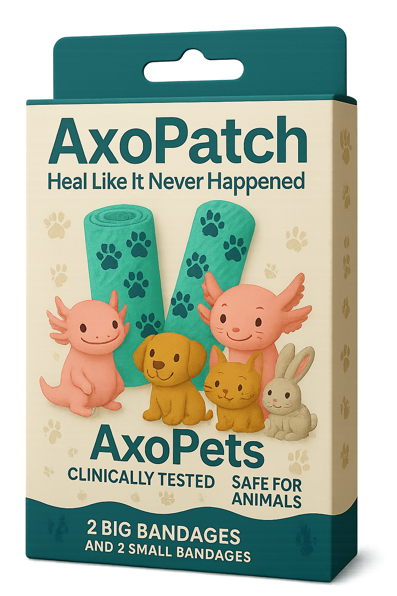

Our
philosophy
philosophy
Welcome to AxoPatch — where smart healing meets adorable design. Inspired by the amazing regenerative powers of the axolotl, AxoPatch is more than just a plaster — it’s a health companion that gives you visible peace of mind. Our signature pH-sensitive bandage lets you monitor wound conditions with a simple color change, helping you care for your loved ones with confidence. But that’s not all — our shop also features a wide variety of plasters and bandage products designed for every need, from daily cuts to more specialized care. Explore our collection today and discover the future of wound care.
What is AxoPatch?
A robust, smart colour-changing plaster with a pH-sensitive centre, copper infusion, and built-in antibiotics - for visible, worry-free healing.
Clinically and Dermatologically Tested
Clinically and dermatologically tested. Every AxoPatch product - from our signature pH-sensitive plasters to our everyday bandages - is designed to be safe, gentle, and effective on all skin types, including sesntiive skin. You can trust AxoPatch for worry-free healing backed by science.
Contains Antibiotics
Infused with medical-grade antibiotics, AxoPatch helps protect wounds from infection while supporting faster healing. Whether it is our colour-changing plaster or other bandage types, every AxoPatch product is built with protection and peace of mind in mind.
pH Sensitive
AxoPatch's pH-sensitive centre changes colour in response to the wound environment, giving you a clear visual cue when something isn't right. So you can act early, stay informed, and heal smarter.
Copper-infused
Each AxoPatch is infused with copper - a natural element known for its antimicrobial and healing-boosting properties. This helps to speed up recovery while reducing the risk of infection.
Our Products
Happy Fathers' Day. Get 30% off your purchase. Promotion until 5 June.

The AxoPatch
The AxoPatch
Plaster
S$11.99
pH-sensitive centre, copper infusion, and built-in antibiotics. This plaster is our main product.

The Plaster (Regular)
S$7.99
Copper infusion and built-in antibiotics, but without our trademark pH-sensitive centre.

The Bandage
S$5.99
Copper infusion and built-in antibiotics. This product is similar to the AxoPatch Plaster, except that this one is a little longer. Just a little.

The Pet
The Pet
Bandage
S$6.99
Copper infusion and built-in antibiotics. This product is similar to the AxoPatch bandage for us humans, just tweaked for our furry friends.
Our Testimonials
"AxoPatch changed how I manage small wounds for my kids. The colour-changing centre gives me a peace of mind, and it is so easy to tell when to change the plaster. Plus, they are adorable!"
Yumi, part-time influencer and full time mum
Yumi, part-time influencer and full time mum
"The copper-infused patch really made a difference. My wound healed faster and stayed clean. I've never seen a plaster that's both high-tech and cute until AxoPatch."
Edward, singer and performer
Edward, singer and performer
"I care for my elderly mum, and AxoPatch has been a lifesaver. The antibiotics and pH-sensitive feature make it feel like I'm doing more than just covering a wound - I'm actively supporting healing."
Shah, famous actor
Shah, famous actor